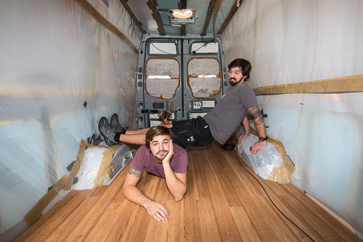

With everything stripped down to the insulation, we were stoked to see that we didn't have to do a thing to the insulation. It was already well insulated to help keep the heat in on those cold nights and keep some cool air in on those warm summer days.
Since that big project was already taken care of for us, we set our sights on the floor. Knowing that we'd be tracking in desert sand, beach sand, maybe some snow, mud, and everything else we stepped in, we wanted it to be easy to clean and to look nice. After all, this is going to be our home for a year.

Two trips to Lowe's was all it took for us to decide on our flooring. We chose vinyl planks that resemble wood flooring. This stuff's even better than wood flooring because it's imported from Italy and is diamond encrusted on the bottom. That's how it sticks so well and the price of 69 cents per square foot couldn't be beat!
Neither of us had a clue as to what we were doing, but I gained a lot of knowledge from YouTube and felt confident that we could do it all by ourselves, like the big boys that we are. We started by laying the first long strip against the left wall of the van starting behind the driver seat. What made it easier is that it takes about 24 hours for the sticky bottom to really take hold, so if I was a little off when I stuck the piece down, I could just slide it ever so gently to get it to fit perfect.
About one row into it we figured out that I felt most confident sticking the vinyl planks to our sub floor while Adam felt confident cutting them all to size. This really sped things up and within two long nights after work and school, we were standing on our brand new floor. The first night we were idiots and only used a lantern and headlamps to cast light in front of us. The next night our mom offered us a small clip-on desk light that we forgot we had lying around. That little sucker made it so much easier to see and our Generatr 100 provided all the power we needed to keep the light on while we were working.
I don't see either of us laying vinyl plank flooring for a living after this. There are certainly some flaws in it, but it does lay a great foundation for the rest of our van build and it gives the van a more homey feel. And as far as the flaws in our craftsmanship, or lack thereof, are concerned, "Eh. Close enough."